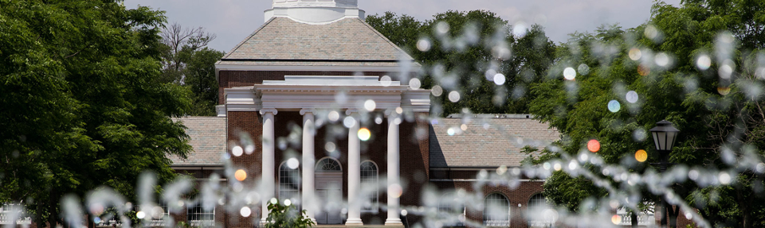

Join Our Group
We are looking for people who want to work at the boundary of infrastructure engineering, computer science, and disaster research, building models that change how communities prepare for hazards, not just describe them. Our group spans civil engineering, computer science, and the quantitative social sciences.
Openings are described below. If your background is close but not an exact match, write anyway — tell us what you want to work on and why. Due to the high volume of inquiry emails, I apologize that I may not be able to respond to every message.